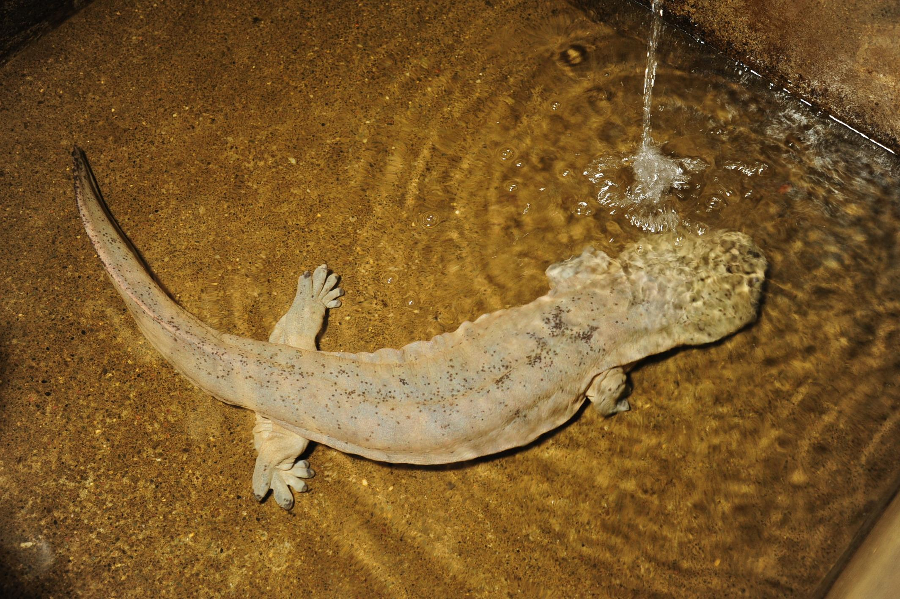
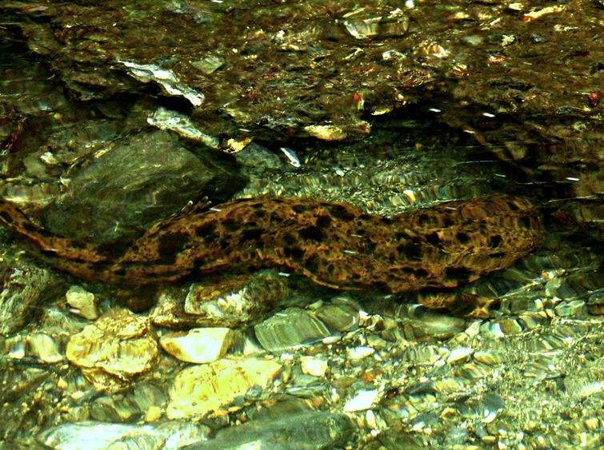
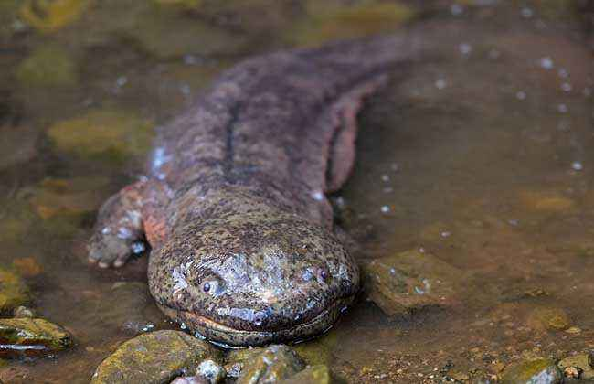
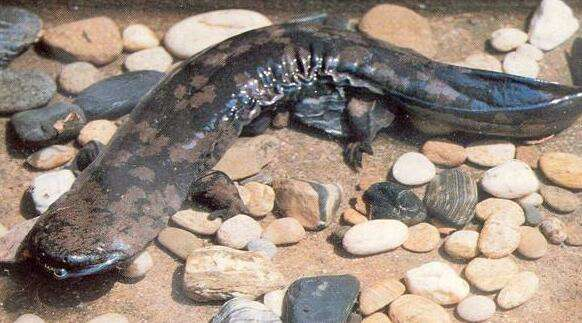

大鲵
- 形态特征
- 栖息环境
- 生活习性
大鲵是生活在淡水中的两栖动物。是中国特产的一种珍贵野生动物，因其夜间的叫声犹如婴儿啼哭，所以俗称为“娃
娃鱼”。“娃娃鱼”是两栖动物中体形最大的一种，外形有点类似蜥蜴，只是相比之下更肥壮扁平。大鲵头部扁平、钝圆，
眼不发达，无眼睑。舌大，扁圆形，前端连于口腔底部。身体前部扁平，至尾部逐渐转为侧扁。体两侧有明显的肤褶，
四肢短扁，指、趾前四后五，具微蹼。尾圆形，尾上下有鳍状物。娃娃鱼的体色可随不同的环境而变化，但一般多呈灰
褐色。体表光滑无鳞，但有各种斑纹，布满粘液。体色随栖居环境色彩而有差异，背面呈棕色、红棕色、黑棕色等，腹
面浅褐色或灰白色。
国家二级保护两栖野生动物
有尾目 | 隐鳃鲵科 | 大鲵属
中文名称：大鲵
拉丁文名：Andrias davidianus
体 型：身长约100-200厘米，体重约20-25千克。
拉丁文名：Andrias davidianus
体 型：身长约100-200厘米，体重约20-25千克。

